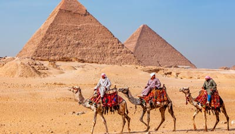

Desde hace milenios, la meseta de Guiza acoge la icónica Gran Pirámide, la más antigua de las Siete Maravillas del Mundo Antiguo.
Se encuentra escoltada por la enigmática Gran Esfinge y por otros impresionantes monumentos.
Construida en el 2560 a.C. , se ha mantenido sorprendentemente bien y destaca por su inconmensurable tamaño:
2.491.882 m3 de volumen y unos 140 M de altura.
Puedes participar en recorridos guiados por la pirámide y admirar sus tumbas y sus salas.
La Gran Esfinge
Cuando piensas en Egipto, una de las primeras imágenes que acuden a tu mente es la Esfinge, la mítica criatura con cuerpo de león y cabeza humana.
Estas figuras eran un símbolo de fuerza y sabiduría en el mundo antiguo.
La Gran Esfinge de Guiza fue tallada directamente sobre la roca de piedra caliza y, posiblemente, representa la cara del faraón Kefrén.
Sus 72 M de altura y su excelente estado de conservación, a pesar de todos los años transcurridos, dan mucho que pensar a los constructores actuales.
Museos
Hay muchos museos vivientes en el mundo, pero cuando reproducen una época histórica tan lejana y admirable, como es el caso del Pueblo Faraónico,
proporcionan una experiencia única a sus visitantes. Este escenario incluye mucho más que reliquias antiguas y recreaciones de la vida del antiguo Egipto,
por ejemplo la tumba de Tutankamón.
La aventura del desierto
Adéntrate en el desierto egipcio, con el telón de fondo de las pirámides, viviendo una auténtica aventura.
Puedes hacerlo en quad, a caballo o en camello, e incluso pasar la noche al raso si contratas determinados programas.

El río Nilo
Guiza es el sitio perfecto para emprender un crucero por el Nilo,
que puede durar uno o varios días, durante el cual es posible explorar otros lugares próximos de interés, tanto contemporáneos como antiguos.
Entre ellos, El Cairo, Lúxor y Asuán.
Parques para relajarse
Esta ciudad egipcia cuenta con abundantes parques de gran tamaño, incluido el fabuloso bosque de Orman Park y el zoo de Guiza,
que programa una gran cantidad de vistosas exhibiciones de animales.